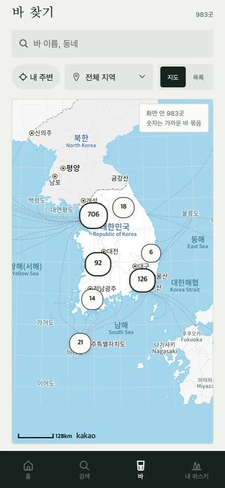

첫잔 [11] — 배포를 두 번 했다: 지문이 둘로 갈라진 앱
오늘 저녁 입문자 안내를 올리면서 업데이트를 한 번이 아니라 두 번 발행했습니다. 설치된 앱이 두 갈래이기 때문입니다. 사흘 전 글의 규칙을 처음으로 제대로 따른 날이자, 그 규칙이 얼마나 성가신지 처음 체감한 날입니다.
설치된 앱이 두 갈래다
9월 10일 빌드 17에서 네이버 지도 앱을 바로 열려고 app.json에 스킴 한 줄을 넣었습니다. 그 한 줄이 네이티브 지문을 바꿔서, 그날부터 세상에는 첫잔이 두 종류 깔려 있습니다. 빌드 13~16(지문 2a3da325)과 빌드 17~21(지문 9b3ca730). 테스트하는 사람들이 전부 새 빌드로 갈아탔으면 문제가 없는데, 누가 어느 빌드를 쓰는지 제가 다 알지 못합니다. 그러니 JS 업데이트는 두 지문에 각각 나가야 합니다.
여기에 하나 더. 9월 19일에 아이콘을 바꾼 뒤로 지금 트리의 지문은 05559994입니다. 이 지문의 빌드는 아직 아무 데도 없습니다. 그러니 지금 상태 그대로 발행하면 아무도 못 받는 업데이트가 됩니다. 사흘 전에 그걸 한 번 했습니다.
한 번의 업데이트, 두 번의 발행
| 순서 | 한 일 | 대상 |
|---|---|---|
| 1 | 아이콘·스플래시 두 장을 옛것(9/13 커밋)으로 잠시 되돌림 | |
| 2 | fingerprint:compare로 9b3ca730 일치 확인 → 발행(그룹 d4c2d895) | 빌드 17~21 |
| 3 | app.json의 nmap 줄도 잠시 되돌림 | |
| 4 | fingerprint:compare로 2a3da325 일치 확인 → 발행(그룹 a1507096) | 빌드 13~16 |
| 5 | 되돌린 세 파일 복원. 웹 재배포, /first-steps와 /glossary가 200으로 뜨는지 확인 | 웹 |
매 발행 앞에 지문 비교를 넣었습니다. 사흘 전 글의 "남은 것"이 이겁니다. 자동화는 아직 못 했고, 손으로 하되 순서를 표로 적어 두는 데까지 왔습니다. 발행 명령 하나가 다섯 단계가 됐습니다.
관측
두 지문에 같은 JS를 보내는 건 되지만, 두 지문의 앱이 같은 앱은 아닙니다. 13~16에는 네이버 지도 스킴이 없어서 바 시트에서 지도 앱이 바로 안 열리고 웹으로 갑니다. 같은 업데이트를 받아도 경험이 갈립니다. 갈래를 유지하는 비용은 발행 횟수가 아니라, 어느 쪽에서 무엇이 되고 안 되는지를 계속 기억해야 한다는 데 있습니다.

새 아이콘은 아직 아무도 못 본다
아이콘과 스플래시는 네이티브 자원이라 OTA로는 바뀌지 않습니다. 첫 방울 마크는 다음 네이티브 빌드(22)부터 보입니다. 그리고 빌드 22가 나오면 지문이 셋이 됩니다. 22를 내는 순간 13~16을 끊을지, 17~21까지 끊을지, 아니면 셋을 다 받쳐 줄지를 정해야 합니다.
남긴 규칙
살아 있는 지문마다 발행한다. 발행 앞에는 항상 fingerprint:compare. 어느 지문에 무엇이 없는지 문서에 적어 둔다.
정하지 않은 것
빌드 22를 언제 낼지, 그때 옛 빌드 사용자를 어떻게 새 빌드로 옮길지 정하지 않았습니다. 테스트 단계라 사람이 몇 안 되니 지금은 두 번 발행하면 되지만, 스토어에 올라간 뒤에는 "어느 빌드를 쓰시나요"를 물을 수 없습니다. 지문이 갈라질 때마다 발행이 하나씩 늘어나는 구조를 그대로 두고 갈 수는 없다는 것까지만 압니다.

Seok
연구하듯 사업합니다. 배터리 재료를 원자 단위에서 계산하는 법을 바닥부터 배우는 중입니다. → 글 더 보기